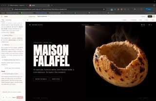
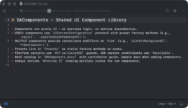
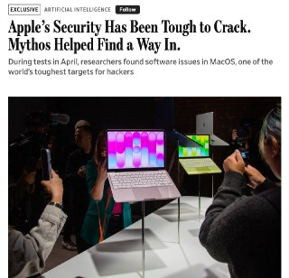
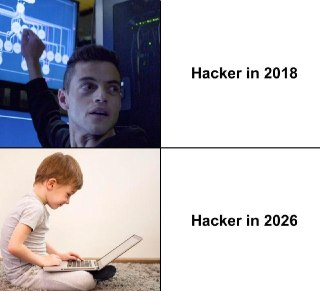
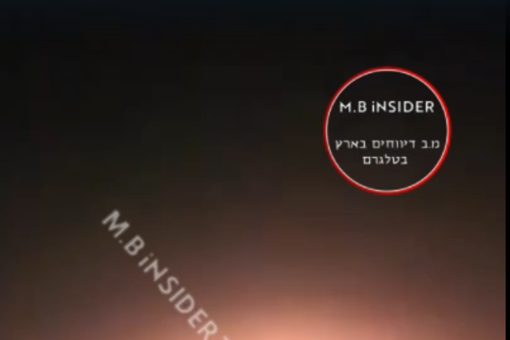

WIREDנמוכה17.05.2026, 00:00
OpenAI is once again reorganizing its executive ranks as part of its effort to unify ChatGPT and Codex into one core product experience.
אימות 1
OpenAI is once again reorganizing its executive ranks as part of its effort to unify ChatGPT and Codex into one core product experience.
For screenwriters like me—and job seekers all over—AI gig work is the new waiting tables. In eight months, I’ve done 20 of these soul-crushing contracts for five different platforms. It’s bad.
Remote operators (slowly) drove the automaker’s autonomous vehicles into a metal fence and a construction barricade, Tesla says.

מ-IBM, דרך סיילספורס ועד לסטארט-אפים ישראלים, בחלק מחברות ההייטק עוברים לגייס לפי כישורים, לא לפי ותק וניסיון, וכך, סטודנטים ואקדמאים טריים עם גישה ל-AI מצליחים לעקוף את המסלול המסורתי - היישר לתפקידי המפתח

רם - t.me/AI_tg_il
חברת Anthropic פרסמה מניפסט המזהיר מפני מעבר הובלת ה-AI לידי סין, מה שעלול להוביל לשימוש במודלים מתקדמים לצנזורה, מעקב ודיכוי אזרחים בהיקפים חסרי תקדים. החברה מעריכה כי המודלים הסיניים מפגרים כעת בחודשים ספורים בלבד, אך נחותים משמעותית במדדי הבטיחות והאבטחה.
תביעה ייצוגית נגד OpenAI טוענת כי החברה הטמיעה בגרסת ה-Web של ChatGPT כלי מעקב של Meta ו-Google, ששימשו להעברת נתוני משתמשים ושאלתם לצד שלישי ללא הסכמתם.

תי עם AI ש״נחשף״ כשעוברים על התמונה עם העכבר ויצא ממש מגניב!

בנוסף, ניתן לנהל ולתקן את הזיכרון של המודל תוך כדי עבודה באמצעות הפקודה /memory.
גוגל נמצאת כעת במגעים עם אלון מאסק וחברת SpaceX להסכם על שיגור מרכזי נתונים לחלל.

בעדכון האחרון לאפליקציית Apple Support נחשפו בטעות קבצים המעידים על כך שאפל משתמשת ב-Claude, המודל של חברת Anthropic, לצורך כתיבת קוד ותיעוד טכני.

Sci-Bot הוא עוזר בינה מלאכותית חדש המבוסס על מאגר Sci-Hub וכולל גישה ל-85 מיליון מחקרים.

המודל Claude Mythos הצליח לפרוץ את macOS ולהשיג השתלטות מלאה על המערכת באמצעות קישור בין שני באגים לא מוכרים. החוקרים הציגו את הממצאים למשרדי אפל, שבוחנת כעת את פרצת האבטחה, אך נכון לעכשיו טרם שוחרר תיקון למערכת.
החברה הסינית FIGUROBOT משיקה את ה-NIA-FR02, רובוטית שולחנית קטנה בגובה 60 ס"מ עם בינה מלאכותית מובנית וסט חיישנים מתקדם.

טרנד חדש ברשת מנצל את מודל התמונות של ChatGPT כדי להתאים למשתמשים תסרוקות ומראה חיצוני על בסיס תמונות סלפי.
סרטון ויראלי מרשת X חושף את יכולותיהם המרשימות של ילדים סינים ששולטים בבינה מלאכותית כבר בגיל 10, כאשר אחד מהם מדגים שליטה ברשתות נוירונים וניהול יעיל של סוכני AI באמצעות Mac Studio.

שמח לשתף שהתחלתי להגיש את ״פינת ה-AI״ במהדורת היום של חדשות 12 עם עמליה דואק ועופר חדד! מדי חמישי ניפגש על המסך (בלי נדר בעזרת השם) - ונדבר על יוז קייסים פרקטיים וכיפיים - שמתאימים לכל אחת ואחת!

אנתרופיק שילבה ב-Claude Code את הפקודה /goal, המאפשרת לסוכן ה-AI לעבוד באופן רציף עד להשלמת המטרה שהוגדרה לו.

גוגל זיהתה מקרה ראשון של ניצול חולשת Zero-day שנוצרה כולה באמצעות בינה מלאכותית. הזיהה התאפשרה בשל עומס של הערות בקוד וטעויות אופייניות למודלי שפה (LLM), שכללו ציון מומצא לחולשה בתוך הקוד עצמו.
הפוסט מציג טענת "חינם", אבל בלי אימות ברור מול המוצר הרשמי, ולכן צריך לראות בזה טענה שדורשת בדיקה.

כלי ה-AI "סידאנס" (Sydance), הזמין בין היתר דרך fal ai, מאפשר שילוב של סרטונים, תמונות ואודיו ליצירת תוכן חדש.

הפוסט מציג טענת "חינם", אבל בלי אימות ברור מול המוצר הרשמי, ולכן צריך לראות בזה טענה שדורשת בדיקה.

הפוסט מציג טענת "חינם", אבל בלי אימות ברור מול המוצר הרשמי, ולכן צריך לראות בזה טענה שדורשת בדיקה.

😅😅 בינה מלאכותית בטלגרם - t.me/AI_tg_il

שיאומי שחררה כקוד פתוח את מודל MiMo V2.5 בשתי גרסאות (Pro ורגילה), המציעות תמיכה בחלון הקשר של מיליון טוקנים. הגרסה הרגילה, בגודל 310B, היא מולטי-מודאלית.

מנסים לעקוב אחרי כל מה שקורה בטכנולוגיה? במקום לעבור על עשרה אתרים שונים, הערוץ שלנו מרכז את מה שקורה עכשיו בהייטק – פשוט ולעניין.
בשל היעדר פתרון צבאי ריאלי לסיכול מוחלט של חיזבאללה והמגבלות האמריקאיות, מוצע להחליף את המאמץ הצבאי במהלכים מדיניים. הצעת הכותב היא להעניק ויתורים מוגבלים ללבנון בתמורה לפגישה בין נתניהו לנשיא לבנון בבית הלבן, מה שיסב מכה מדינית לאיראן ויחזק את מעמדה של ישראל.
הרעיונות והראיונות הנחושים ששיווק נתניהו הקנו לו מעמד של גורו עולמי לבטחון ומלחמה בטרור נתניהו הפך למנהיג הישראלי ששיחרר הכי הרבה טרוריסטים כלואים, נכנע פעם אחר פעם לטרור, לארגונים ומדינות טרוריסטיות עמוד השדרה המנהיגותי הרעוע שלו הפך אותו ממר בטחון למר מאוד
ד"ר יוסף ג'בארין נבחר ליו"ר מפלגת חד"ש במקומו של איימן עודה. ג'בארין, שכיהן בעבר חבר כנסת, ידוע בעמדותיו השנויות במחלוקת, כולל התנגדות להגדרת חיזבאללה כארגון טרור וביקורו במאסרו של מרואן ברגותי. עם בחירתו, קרא להקמת רשימה משותפת רחבה לקראת הבחירות.

הניסוח הזהיר יותר הוא: פיצוץ עז שנשמע סמוך לבית שמש התברר כפעילות מתוכננת ותואמה של חברת "תומר" הממשלתית להנעה רקטית.

גורמים בפנטגון דוחפים לתקיפות ממוקדות שיגבירו את הלחץ על טהרן, בעוד אחרים מצדדים בהמשך המאמץ הדיפלומטי לפי הדיווח, טראמפ עצמו נטה בשבועות האחרונים לדיפלומטיה, מתוך תקווה שהשילוב של משא ומתן ישיר ולחץ כלכלי יניע את טהרן להסכם

The firm conducted an internal review of its technology, opting for Chainlink in the wake of the Kelp DAO exploit. “This decision prioritizes the safety and security of all Lombard users and reflects our commitment to maintaining the security record we've built since day one, zero security
The micronation honored Vitalik Buterin during ETH Prague 2026 as it continued promoting blockchain-based governance and digital citizenship.
New York, USA, 15th May 2026, Chainwire

Two papers published this week have reignited debates about the risk posed by “Q-day” to the cryptography that underpins digital assets.

At a conference dedicated to the riskiest traders in finance, Miami's crypto scene appeared far different than during its pandemic-era boom.

אוהדי הפועל יגיעו למשחק הביתי מול הפועל פ"ת כמתוכנן, לאחר שמשטרת ישראל הקלה בדרישותיה בנוגע להכנסת תופים, דגלים ושלטים למגרש.
הפועל פתח תקוה הודיעה לסוכנו של החלוץ מארק קוסטה כי לא תממש את האופציה להארכת חוזהו, לאחר שביצועיו דעכו לקראת סוף העונה והוא לא כבש מאז תשעה משחקים.